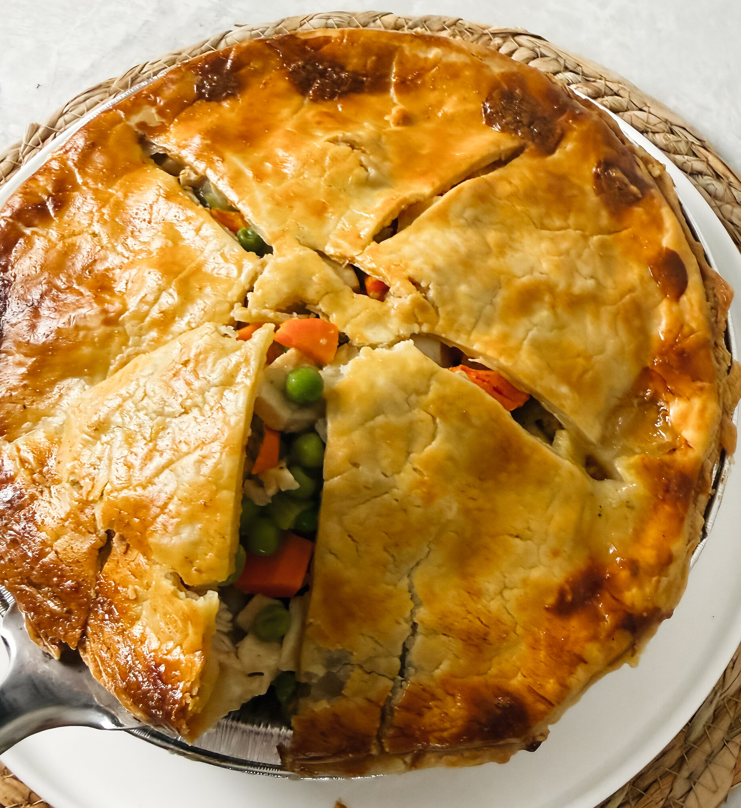

What to do with the last of the turkey — a warm supper that still belongs to summer.
This is the supper I make when there's turkey left to use and the day has asked for something kind. Peas, carrots, corn, mushrooms, and onion folded into turkey and its own gravy, with a little cream to round it — all of it under a double crust made from scratch. It is comfort food that doesn't feel heavy, the kind of thing worth slowing down for even in summer.
Begins with the house Pie Crust — a double batch, made and chilled ahead.
For the filling
For the crust

If the edges color before the top sets, lay a loose ring of foil over them and let the pie finish.
"Let it rest fifteen minutes before slicing — long enough for the filling to settle into something you can lift cleanly. It freezes beautifully unbaked, too: wrap it well, and bake straight from the freezer with a little more time."